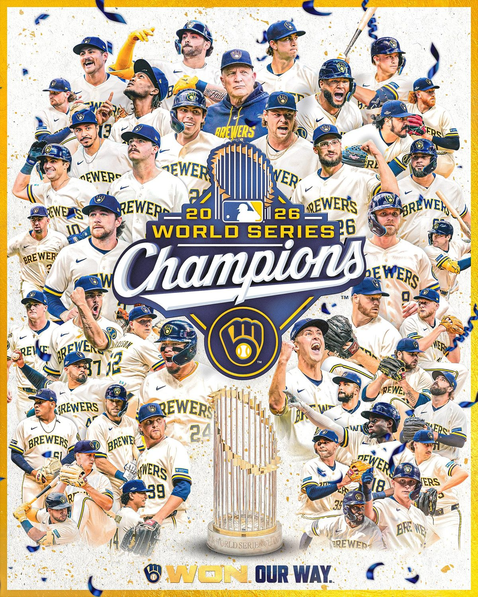

Sport
Milwaukee Brewers vann World Series för första gången

Milwaukee Brewers slog Tampa Bay Rays med 4–1 i den femte matchen och vann finalserien i baseboll med 4–1 i matcher. Det är klubbens första mästerskap sedan starten för 57 år sedan.
Milwaukee Brewers är för första gången mästare i amerikansk baseboll. Natten till torsdag svensk tid vann laget den femte matchen mot Tampa Bay Rays med 4–1 på Tropicana Field i Tampa, och därmed tog Brewers hem World Series med 4–1 i matcher. Klubben grundades för 57 år sedan som ett nytt lag i ligan, rapporterar CBS News.
Matchen
Startkastaren Misiorowski höll Rays poänglösa i fem och två tredjedels inning, och Trevor Megill stängde matchen. Catchern William Contreras utsågs till finalseriens mest värdefulla spelare, enligt nyhetsbyrån AP som The Art Of News hänvisar till.
Säsongen
Titeln kröner en stark säsong. Brewers vann 103 matcher under grundserien och 11 av 13 matcher i slutspelet, skriver Zero Gravity. Det är Milwaukees första mästerskap i baseboll sedan Milwaukee Braves vann 1957.
Bland supportrarna på X är glädjen stor. En av dem skriver att han fått höra att det aldrig skulle hända under hans livstid, och att han nu har sett alla sina proffslag vinna en titel.
Så vet vi det
Källmix: 7 källor – 2 primärkälla, 1 ögonvittne, 2 analys, 1 journalist, 1 etablerad media. Etablerad media utgör 1 av 7.
- Primärkälla Milwaukee Brewers
- Primärkälla MLB, basebolligan
- Analys McBisonEntertainment: Misiorowski och Megill
- Analys Zero Gravity: 103 vinster och 11–2 i slutspelet
- Journalist The Art Of News, med hänvisning till AP: Contreras bäste spelare
- Ögonvittne Supportern Thebadgertrio
- Etablerad media CBS News
Resultatet bekräftas av klubben och MLB. Uppgiften att William Contreras blev finalseriens mest värdefulla spelare kommer från ett nyhetskonto som hänvisar till nyhetsbyrån AP.
Fördjupa
Frågorna öppnar Grok i en ny flik med artikeln som underlag. AI-svar kan innehålla fel, så kontrollera mot källorna.
Läs vidare
Uppdateringslogg
- 07:20 – Artikeln publicerad.